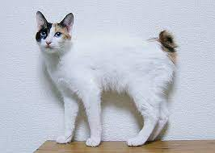

|  |
| Japanese Bobtail |
BEHAVIOR
The Japanese Bobtail cat is friendly and intelligent. The breed is said to have a sweet nature and get on with most other animals and love human company. Some can learn tricks and do need to be kept amused and stimulated. It is a fairly talkative breed.
GROOMING
Although easy to keep in condition compared with its longhaired cousins, the Exotic Shorthair cat's coat still needs some attention. Regular grooming will keep dead hair from clogging up the coat and from being deposited on the furniture. If the cat's eyes tend to run because the face is flat, the corner of the eye and side of the nose will need regular cleaning. As with all cats, regular vaccination and parasite control is recommended.
HEALTH PROBLEMS
In America, the Japanese Bobtail cat is known as a robust and healthy breed that lives well into its teens. This cannot be confirmed or denied in the UK population because of low numbers of the breed in this country. It is said not to have the same problems as other tailless breeds such as the Manx because it is a different gene mutation. However, not enough information is available on this yet.
NUTRITION
Every cat is unique and each has their own particular likes, dislikes, and needs when it comes to food. However, cats are carnivores and every cat must obtain 41 different and specific nutrients from their food. The proportion of these nutrients will vary depending on age, lifestyle and overall health, so it's not surprising that a growing, energetic kitten needs a different balance of nutrients in her diet than a less active senior cat. Other considerations to bear in mind are feeding the right quantity of food to maintain 'ideal body condition' in accordance with feeding guidelines and catering to individual preference regarding wet or dry food recipes.